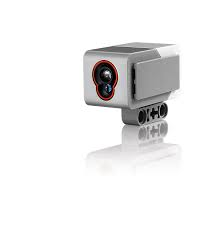

Lego
Mi robot en lego
Mi robot en lego lo construimos en equipo y su funcion fue de realizar un recorrido por un laverito.
Tenia que girar en diferentes direcciones dependiendo de el color de cinta que detectara el sensor.
Al final se detenia si el sensor detectava una cinta color rojo.
Sus principales caracteristicas son:
- Controlado por software de lego.
- Funciona con un sensor de color.

- Si el sensor detecta el color azul realizar un giro de 90 grados a la izquierda, mostrar en pantalla: izquierda.
- Si el sensor detecta el color nego realizar un giro de 90 grados a la derecha, mostrar en pantalla: derecha.
- Rojo detenerse, mostrar en pantalla: Fin.
En mi opinion Programar en lego es facil y divertido ya que preogramamos por bloques lo cual indica que solo se arrastra el bloque.